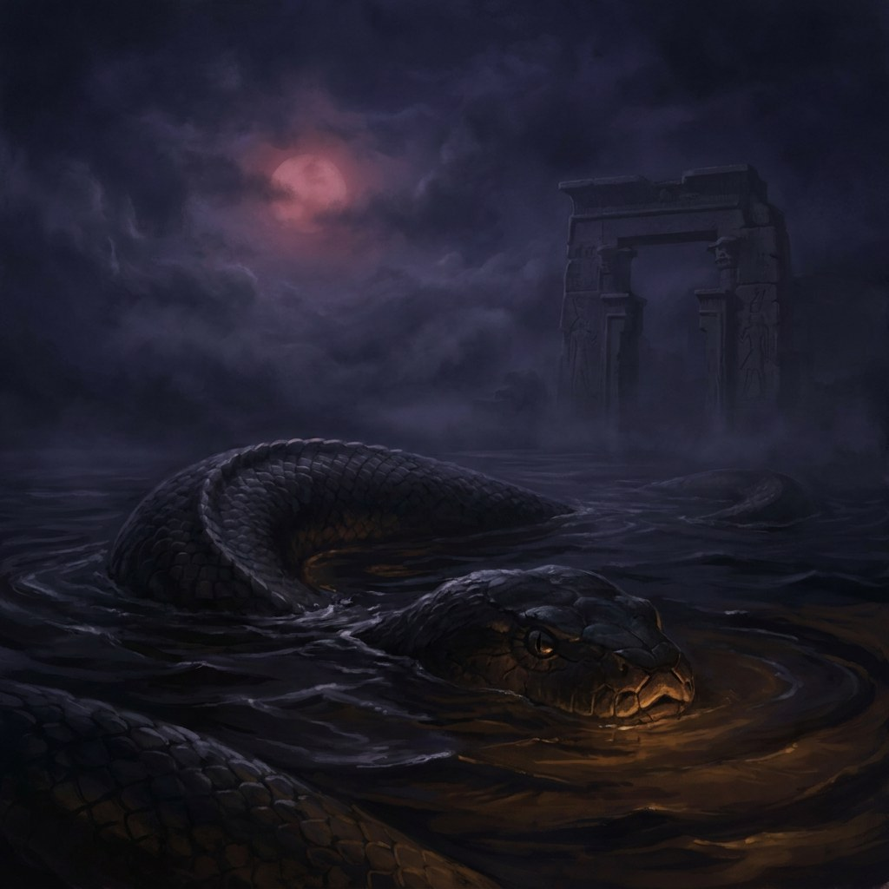
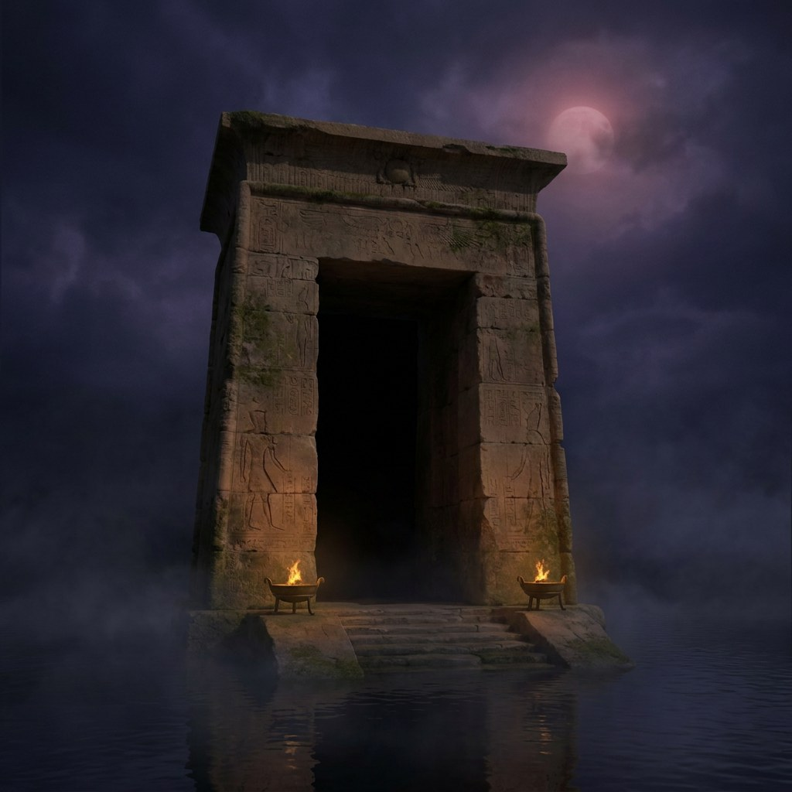

Sunset — where it starts
Every night the sun dies.
The Egyptians knew where it went.
Down. Into the Duat — the underworld beneath the desert. The sun sails through it in a boat, from dusk until dawn, and has to fight its way out the other side. The dead make the same trip. This is that journey: twelve hours, twelve gates, one river.
𓉐𓊽
First, you have to get in.
Before anyone goes down, the body has to be made to last. By the time the Egyptians wrote the whole process down, it took seventy days. Forty of them packed in natron — a salt scraped off a dried-up lake bed — until every drop of water is gone. The organs come out. The brain is thrown away; nobody thinks it does anything. The heart stays in. The heart is where thinking happens, and it will be needed at the end.
Then the tunnel. The passage under the Great Pyramid drops at twenty-six degrees through solid rock, aimed at the part of the northern sky where the stars never set. The Egyptians called those the Undying Stars. A corridor pointed at them is not a route to anywhere. It is a claim about living forever.
Follow the passage down ↗- 70
- Days to prepare
- 40
- Days packed in salt
- 26°
- Slope of the tunnel
- 1
- Organ left in
𓈗
Now the crossing. Ra, the sun god, sails the underworld in a boat and the dead sail with him. Twelve hours of night, twelve gates to get through, and something enormous waiting in the water at hour seven.

↗ Apep𓆙
↗ The Gate𓉿𓆄𓄣
At the end, they weigh
your heart.
This is the room. Thirty metres under the pyramid, cut into the bedrock before a single block was stacked on top of it. Nobody was ever buried here, and nobody has explained what it was for.
The test itself is simple. Your heart goes on one side of a scale. One ostrich feather goes on the other — the feather of Ma’at, which means truth: the order the whole world is supposed to run on. A heavy heart is a heart that broke it. Forty-two judges ask forty-two questions — did you lie, did you steal, did you cause anyone pain — and you have to deny every single one. If your heart weighs more than the feather, a monster eats it and you stop existing. Not punished. Just gone.
Wait for the light ↗- 42
- Judges
- 42
- Questions
- 30m
- Under the rock
- 1
- Feather
𓇳
The sun gets out.
So do you.
Hour twelve. The boat clears the last gate and the sun climbs back over the eastern horizon, the same as yesterday and the day before. The pyramid catches the light first, along one edge, minutes before the desert around it does.
But nothing is won for good. The snake is cut apart at hour seven every night, and every night it is back. Tomorrow the sun dies again and the whole trip runs again. That was the point of all of it — the world keeps going because the journey keeps being made, and for three thousand years people built things like this to help it along.
- 146m
- Its original height
- 2.3M
- Blocks of stone
- 12
- Hours of night
- 1
- Sunrise